Layouts
Overview
When writing applications in the Standard Widget Toolkit (SWT), you may
need to use layouts to give your
windows a specific look. A layout controls the position and size of children in
a Composite. Layout classes are
subclasses of the abstract class Layout.
SWT provides several standard layout classes, and you can write custom layout
classes.
In SWT, positioning and sizing does not happen automatically.
Applications can decide to size and place a Composite's
children initially, or in a resize listener. Another option is to specify a
layout class to position and size the children. If children are not given a
size, they will have zero size and they cannot be seen.
The diagram below illustrates a few general terms that are used when
discussing layouts. The Composite (in this case, a TabFolder) has
a location, clientArea and trim. The size of the Composite
is the size of the clientArea plus the size of the trim. This Composite
has two children that are laid out side by side. A Layout is managing
the size and position of the children. This Layout allows spacing
between the children, and a margin between the children and the edges of
the Layout. The size of the Layout is the same as the size of the
Composite's clientArea.
The preferred size of a widget is the minimum size needed to show
its content. In the case of a Composite, the preferred size is the
smallest rectangle that contains all of its children. If children have been
positioned by the application, the Composite
computes its own preferred size based on the size and position of the children.
If a Composite is using a layout
class to position its children, it asks the Layout
to compute the size of its clientArea, and then it adds in the trim
to determine its preferred size.
Standard Layouts
The standard layout classes in the SWT library are:
FillLayoutlays out equal-sized widgets in a single row or columnRowLayoutlays out widgets in a row or rows, with fill, wrap, and spacing optionsGridLayoutlays out widgets in a gridFormLayoutlays out widgets by creating attachments for each of their sides
To use the standard layouts, you need to import the SWT layout package:
import org.eclipse.swt.layout.*;
Layouts are pluggable. To set the Composite
widget's layout, you use the widget's setLayout(Layout)
method. In the following code, a Shell (a
subclass of Composite) is told to
position its children using a RowLayout:
Shell shell = new Shell(); shell.setLayout(new RowLayout());
A layout class may have a corresponding layout
data class: a subclass of Object
that contains layout data for a specific child. By convention, layout data
classes are identified by substituting "Data"
for "Layout" in the class name. For
example, the standard layout class RowLayout
has a layout data class called RowData,
the layout class GridLayout uses a
layout data class called GridData, and the layout class FormLayout has a layout data class called FormData. A widget's layout data class is set as follows:
Button button = new Button(shell, SWT.PUSH); button.setLayoutData(new RowData(50, 40));
Examples in this Document
Most of the snapshots in this document were taken by running variations on the following example code. We may change the type of layout, the options used, or the type or number of children.
import org.eclipse.swt.SWT;
import org.eclipse.swt.layout.RowLayout;
import org.eclipse.swt.widgets.Button;
import org.eclipse.swt.widgets.Display;
import org.eclipse.swt.widgets.Shell;
public class LayoutExample {
public static void main(String[] args) {
Display display = new Display();
Shell shell = new Shell(display);
// Create the layout.
RowLayout layout = new RowLayout();
// Optionally set layout fields.
layout.wrap = true;
// Set the layout into the composite.
shell.setLayout(layout);
// Create the children of the composite.
new Button(shell, SWT.PUSH).setText("B1");
new Button(shell, SWT.PUSH).setText("Wide Button 2");
new Button(shell, SWT.PUSH).setText("Button 3");
shell.pack();
shell.open();
while (!shell.isDisposed()) {
if (!display.readAndDispatch()) display.sleep();
}
}
}
Running the above code results in the following:
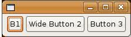If the user resizes the shell so that there is no longer room for Button 3 on the
right, the RowLayout wraps Button 3 to the
next row, as follows:
Using layouts is closely tied with resize, as we shall see.
Consequently, most of the examples in this document show what would happen if
the Composite becomes smaller or
larger, in order to illustrate how the Layout
works.
FillLayout
FillLayout is the simplest layout class. It
lays out widgets in a single row or column, forcing them to be the same size.
Initially, the widgets will all be as tall as the tallest widget, and as wide
as the widest. FillLayout does not
wrap, and you cannot specify margins or spacing. You might use it to lay out
buttons in a task bar or tool bar, or to stack checkboxes in a Group. FillLayout can also be used when a Composite only has one child. For example, if a Shell has a single Group child, FillLayout
will cause the Group to completely
fill the Shell.
Here is the relevant portion of the example
code. First we create a FillLayout,
then (if we want vertical) we set its type
field to SWT.VERTICAL, and set it into the Composite
(a Shell). The Shell has three pushbutton children, B1, B2, and Button 3. Note
that in a FillLayout, children are
always the same size, and they fill all available space.
FillLayout fillLayout = new FillLayout();
fillLayout.type = SWT.VERTICAL;
shell.setLayout(fillLayout);
new Button(shell, SWT.PUSH).setText("B1");
new Button(shell, SWT.PUSH).setText("Wide Button 2");
new Button(shell, SWT.PUSH).setText("Button 3");
The following table shows the differences
between a horizontal and vertical FillLayout,
initially and after the parent has grown.
Initial |
After resize |
|
fillLayout.type = SWT.HORIZONTAL
(default) |
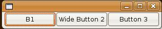 | 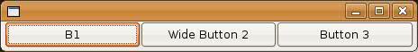 |
fillLayout.type = SWT.VERTICAL |
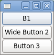 | 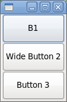 |
RowLayout
RowLayout is more commonly used than FillLayout because of its ability to
wrap, and because it provides configurable margins and spacing. RowLayout has a number of configuration
fields. In addition, the height and width of each widget in a RowLayout can be specified by setting
the widget's RowData object using setLayoutData.
RowLayoutConfiguration Fields
The type field controls whether the RowLayout
lays out widgets in horizontal rows, or vertical columns. RowLayouts are
horizontal by default.
The wrap field controls whether or not the RowLayout will wrap widgets into the
next row if there isn't enough space in the current row. RowLayouts wrap by default.
If the pack field is true, widgets in a RowLayout will take their natural size,
and they will be aligned as far to the left as possible. If pack is false,
widgets will fill the available space, similar to the widgets in a FillLayout. RowLayouts pack by default.
If the justify field is true, widgets in a RowLayout are spread across the
available space from left to right. If the parent Composite grows wider, the extra space is distributed evenly among
the widgets. If both pack and justify are true, widgets take their
natural size, and the extra space is placed between the widgets in order to
keep them fully justified. By default, RowLayouts
do not justify.
The marginLeft, marginTop, marginRight, marginBottom and spacing fields control the number of
pixels between widgets (spacing) and
the number of pixels between a widget and the side of the parent Composite (margin). By default, RowLayouts
leave 3 pixels for margins and spacing. The margin and spacing fields are shown
in the following diagram.
RowLayout Examples
The following example code creates a RowLayout,
sets all of its fields to non-default values, and then sets it into a Shell.
RowLayout rowLayout = new RowLayout(); rowLayout.wrap = false; rowLayout.pack = false; rowLayout.justify = true; rowLayout.type = SWT.VERTICAL; rowLayout.marginLeft = 5; rowLayout.marginTop = 5; rowLayout.marginRight = 5; rowLayout.marginBottom = 5; rowLayout.spacing = 0; shell.setLayout(rowLayout);
If you are using the default field values, you only need one line of code:
shell.setLayout(new RowLayout());The results of setting specific fields is shown below:
Initial |
After resize |
|
rowLayout.wrap = true; rowLayout.pack = true; rowLayout.justify = false; rowLayout.type = SWT.HORIZONTAL; (defaults) |
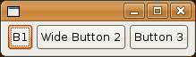 | 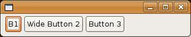 |
wrap = false (clips if not enough space) |
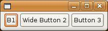 | 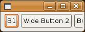 |
pack = false (all widgets are the same size) |
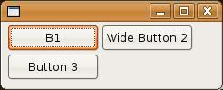 | |
justify = true (widgets are spread across the available space) |
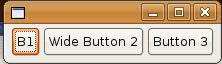 | 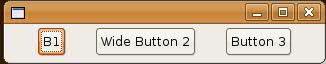 |
type = SWT.VERTICAL (widgets are arranged vertically in columns) |
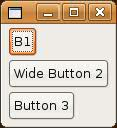 | 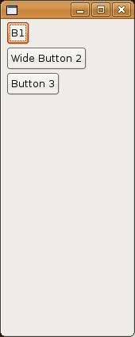 |
Using RowData Objects with RowLayout
Each widget
controlled by a RowLayout can have
its initial width and height specified by setting its RowData object.
The following code uses RowData objects to change the initial size of the Buttons in a Shell.
import org.eclipse.swt.*;
import org.eclipse.swt.widgets.*;
import org.eclipse.swt.layout.*;
public class RowDataExample {
public static void main(String[] args) {
Display display = new Display();
Shell shell = new Shell(display);
shell.setLayout(new RowLayout());
Button button1 = new Button(shell, SWT.PUSH);
button1.setText("Button 1");
button1.setLayoutData(new RowData(50, 40));
Button button2 = new Button(shell, SWT.PUSH);
button2.setText("Button 2");
button2.setLayoutData(new RowData(50, 30));
Button button3 = new Button(shell, SWT.PUSH);
button3.setText("Button 3");
button3.setLayoutData(new RowData(50, 20));
shell.pack();
shell.open();
while (!shell.isDisposed()) {
if (!display.readAndDispatch()) display.sleep();
}
}
}
Here is what you see when you run this code.
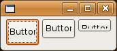GridLayout
GridLayout is possibly the most useful and
powerful of the standard layouts, but it is also the most complicated. With a GridLayout,
the widget children of a Composite are laid out in a grid. GridLayout has
a number of configuration
fields, and, like RowLayout, the
widgets it lays out can have an associated layout data object, called GridData. The power of GridLayout lies in the ability to
configure GridData for each widget
controlled by the GridLayout.
GridLayout Configuration Fields
The numColumns field is the most important
field in a GridLayout, and it is
usually the first field an application will set. Widgets are laid out in
columns from left to right, and a new row is created when numColumns + 1 widgets are added to the Composite. The default is to have only 1 column. The following code
creates a Shell with five Button children of various widths,
managed by a GridLayout. The table
below shows the grid when numColumns
is set to 1, 2, or 3.
Display display = new Display();
Shell shell = new Shell(display);
GridLayout gridLayout = new GridLayout();
gridLayout.numColumns = 3;
shell.setLayout(gridLayout);
new Button(shell, SWT.PUSH).setText("B1");
new Button(shell, SWT.PUSH).setText("Wide Button 2");
new Button(shell, SWT.PUSH).setText("Button 3");
new Button(shell, SWT.PUSH).setText("B4");
new Button(shell, SWT.PUSH).setText("Button 5");
shell.pack();
shell.open();
while (!shell.isDisposed()) {
if (!display.readAndDispatch()) display.sleep();
}
numColumns = 1 |
numColumns = 2 |
numColumns = 3 |
| 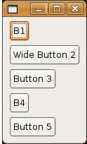 | 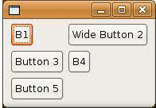 | 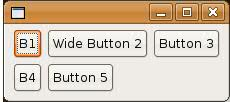 |
The makeColumnsEqualWidth field forces the
columns to be the same width. The default is false. If we change the example
above to have 3 columns of equal width, this is what we would get (note that in
the absence of further instruction, widgets are left-justified in their
columns).
The marginWidth, marginHeight, horizontalSpacing, and
verticalSpacing fields in a GridLayout
are similar to those in a RowLayout.
The difference is that the left and right margins are grouped into marginWidth, and the top and bottom margins
are grouped into marginHeight. Also,
in a GridLayout you can specify horizontalSpacing and verticalSpacing independently,
whereas in a RowLayout, spacing applies to horizontal or vertical depending on the type of
the RowLayout.
GridData Object Fields
GridData is the layout data object associated with GridLayout. To set a widget's GridData object, you use the setLayoutData method. For example, to
set the GridData for a Button, we could do the following:
Button button1 = new Button(shell, SWT.PUSH);
button1.setText("B1");
button1.setLayoutData(new GridData());
Of course, this code just creates a GridData
object with all of its fields set to their default values, which is the same as
not setting the layout data at all. There are two ways to create a GridData
object with certain fields set.
The first is to set the fields directly, like this:
GridData gridData = new GridData(); gridData.horizontalAlignment = GridData.FILL; gridData.grabExcessHorizontalSpace = true; button1.setLayoutData(gridData);
The second is to take advantage of convenience API – style bits defined
by GridData:
button1.setLayoutData(new GridData(GridData.HORIZONTAL_ALIGN_FILL | GridData.GRAB_HORIZONTAL));
In fact, certain common style bit combinations are provided for further convenience:
button1.setLayoutData(new GridData(GridData.FILL_HORIZONTAL));
Note that
FILL_ convenience styles set both fill alignment and grab. GridData style
bits can only be used for boolean and enumeration fields. Numeric fields must
be set directly.
One final
note about GridData objects before we get into their fields: do not
reuse GridData objects. Every widget in a Composite that is
managed by a GridLayout must have a unique GridData object. If
the layout data for a widget in a GridLayout is null at layout time, a
unique GridData object is created for it.
The horizontalAlignment and verticalAlignment fields specify where to place
a widget horizontally and/or vertically within its grid cell. Each alignment
field can have one of the following values:
BEGINNINGCENTERENDFILL
The default horizontalAlignment is BEGINNING (or left-aligned). The default verticalAlignment is CENTER.
Let's go
back to our five-button example with three columns, and we will vary
the horizontalAlignment of Button 5.
horizontalAlignment = GridData.BEGINNING (default) |
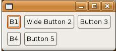 |
horizontalAlignment = GridData.CENTER |
 |
horizontalAlignment = GridData.END | 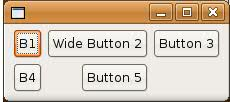 |
horizontalAlignment = GridData.FILL | 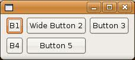 |
The horizontalIndent field allows you to
move a widget to the right by a specified number of pixels. This field is
typically only useful when the horizontalAlignment
is BEGINNING. We cannot use a style bit to set the indent, so we will indent Button 5 in our
example by 4 pixels as follows:
GridData gridData = new GridData(); gridData.horizontalIndent = 4; button5.setLayoutData(gridData);

The horizontalSpan and verticalSpan fields let widgets occupy more
than one grid cell. They are often used in conjunction with FILL alignment. We
can make Button 5 in our example span the last two cells as follows:
GridData gridData = new GridData(); gridData.horizontalAlignment = GridData.FILL; gridData.horizontalSpan = 2; button5.setLayoutData(gridData);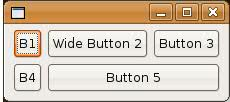
If we decide to make Wide Button 2 span two cells instead, we would end up with this:
GridData gridData = new GridData(); gridData.horizontalAlignment = GridData.FILL; gridData.horizontalSpan = 2; button2.setLayoutData(gridData);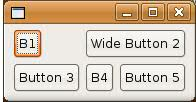
Or we could make Button 3 span two cells vertically:
GridData gridData = new GridData(); gridData.verticalAlignment = GridData.FILL; gridData.verticalSpan = 2; button3.setLayoutData(gridData);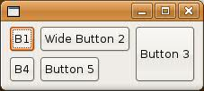
The grabExcessHorizontalSpace
and grabExcessVerticalSpace fields
are typically used for larger widgets such as Text, List or
Canvas to allow
them to grow if their containing Composite
grows. If a Text is grabbing excess
horizontal space and the user resizes the Shell
wider, then the Text will get all of the
new horizontal space and other widgets in the same row will stay their original
width. Of course, the widget that is grabbing excess space is also the first
one to shrink when the Shell gets
smaller. It is easiest to always think of the grabExcessSpace fields in the context of resizing. For a simple
example, let's reuse the previous example where Button 3 spanned
two cells vertically. Here it is again:
If we resize this window, the only thing that happens is that the window gets bigger:
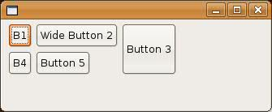Now we will tell Button 3 to grab excess horizontal and vertical space, and Buttons 1 and 4 to fill vertically (without grabbing), and we resize the window again:
Button button1 = new Button(shell, SWT.PUSH);
button1.setText("B1");
GridData gridData = new GridData();
gridData.verticalAlignment = GridData.FILL;
button1.setLayoutData(gridData);
new Button(shell, SWT.PUSH).setText("Wide Button 2");
Button button3 = new Button(shell, SWT.PUSH);
button3.setText("Button 3");
gridData = new GridData();
gridData.verticalAlignment = GridData.FILL;
gridData.verticalSpan = 2;
gridData.grabExcessVerticalSpace = true;
gridData.horizontalAlignment = GridData.FILL;
gridData.grabExcessHorizontalSpace = true;
button3.setLayoutData(gridData);
Button button4 = new Button(shell, SWT.PUSH);
button4.setText("B4");
gridData = new GridData();
gridData.verticalAlignment = GridData.FILL;
button4.setLayoutData(gridData);
new Button(shell, SWT.PUSH).setText("Button 5");
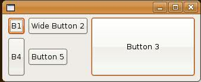
This time, Button 3 grew in both directions, and Button 4 grew vertically. The other buttons stayed their original sizes. Because Button 3 was grabbing vertically and it spans two rows, the last row that it spans grew taller. Note that Button 1 did not grow—although it is filling vertically—because its row did not grow. Since Button 3 was grabbing horizontally, its column grew wider, and since it was filling horizontally, it grew wider to fill the column.
In a typical application window, you often want to have at least one widget that is grabbing. If more than one widget is trying to grab the same space, then the excess space is shared evenly among the grabbing widgets:
import org.eclipse.swt.SWT;
import org.eclipse.swt.layout.GridData;
import org.eclipse.swt.layout.GridLayout;
import org.eclipse.swt.widgets.Display;
import org.eclipse.swt.widgets.Label;
import org.eclipse.swt.widgets.List;
import org.eclipse.swt.widgets.Shell;
import org.eclipse.swt.widgets.Text;
public class SampleGrabExcess {
public static void main(String[] args) {
Display display = new Display();
Shell shell = new Shell(display);
shell.setLayout(new GridLayout(2, false));
Label nameLabel = new Label(shell, SWT.NONE);
nameLabel.setText("Name:");
Text nameText = new Text(shell, SWT.BORDER);
GridData gridData = new GridData();
gridData.horizontalAlignment = SWT.FILL;
gridData.grabExcessHorizontalSpace = true;
nameText.setLayoutData(gridData);
nameText.setText("Text grows horizontally");
Label addressLabel = new Label(shell, SWT.NONE);
addressLabel.setText("Address:");
gridData = new GridData();
gridData.verticalAlignment = SWT.TOP;
addressLabel.setLayoutData(gridData);
Text addressText = new Text(shell, SWT.BORDER | SWT.WRAP | SWT.MULTI);
gridData = new GridData();
gridData.horizontalAlignment = SWT.FILL;
gridData.grabExcessHorizontalSpace = true;
gridData.verticalAlignment = SWT.FILL;
gridData.grabExcessVerticalSpace = true;
addressText.setLayoutData(gridData);
addressText.setText("This text field and the List\nbelow share any excess space.");
Label sportsLabel = new Label(shell, SWT.NONE);
sportsLabel.setText("Sports played:");
gridData = new GridData();
gridData.horizontalSpan = 2;
sportsLabel.setLayoutData(gridData);
List sportsList = new List(shell, SWT.BORDER | SWT.MULTI);
gridData = new GridData();
gridData.horizontalSpan = 2;
gridData.horizontalAlignment = SWT.FILL;
gridData.grabExcessHorizontalSpace = true;
gridData.verticalAlignment = SWT.FILL;
gridData.grabExcessVerticalSpace = true;
sportsList.setLayoutData(gridData);
sportsList.add("Hockey");
sportsList.add("Street Hockey");
shell.pack();
shell.open();
while (!shell.isDisposed()) {
if (!display.readAndDispatch())
display.sleep();
}
}
}
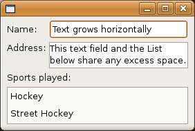
When resized, the single line (top-most) Text grows to consume all
available horizontal space, and the second Text and the List grow
to consume all remaining space (both vertically and horizontally):
One final
point to note about grabbing. If a widget is set to grab excess horizontal space
and its parent Composite grows wider,
then the entire column containing
that widget grows wider. If a widget is grabbing excess vertical space and its
parent Composite grows taller, then
the entire row containing that widget
grows taller. The implication of this is that if any other widget in the
affected column or row has fill
alignment, then it will stretch also. Widgets that have beginning, center, or
end alignment will not stretch: they will stay at the beginning, center or end
of the wider column or taller row.
The widthHint and heightHint fields indicate the number of pixels wide or tall that
you would like a widget to be, assuming that it does not conflict with other requirements
in the GridLayout's constraint
system. Looking back at the five-button, three-column example, say we want Button 5 to be 70
pixels wide and 40 pixels tall. We code it as follows:
GridData gridData = new GridData(); gridData.widthHint = 70; gridData.heightHint = 40; button5.setLayoutData(gridData);
The natural size of Button 5 is shown in the window on the left, below, and the 70-pixel wide, 40-pixel tall Button 5 is on the right.
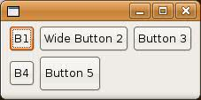Note, however, that if the horizontalAlignment
of Button 5 was FILL, then the GridLayout
would not have been able to honor the request for a width of 70 pixels.
One final comment about using width and height hints. Something that looks good on one platform may not look good on another. The variation between font sizes and natural widget sizes across platforms means that hard-coding pixel values is not usually the best way to lay out windows. So, keep the use of size hints to a minimum, if you use them at all.
A Complex GridLayout Example
So far, the
GridLayout examples have been fairly
simple, in order to show how each field works. Now, we will put them all
together to create a more complicated example. We start by hand-drawing a rough
sketch of the window we want to create, to determine things like how many
columns the grid should contain, and whether or not any widgets need to span.
Then we
start coding the example from the diagram. The code is below. Note that we have
added a bit of logic to make the code more interesting, for example, "Browse..." opens a FileDialog to read an Image file which the Canvas displays in a paint listener, Delete deletes
the Image, and Enter prints the
current dog and owner info. The example has been coded in a
single main(String[]) method to allow us to
focus on layout code and not get distracted by programming style.
import org.eclipse.swt.SWT;
import org.eclipse.swt.events.PaintEvent;
import org.eclipse.swt.events.PaintListener;
import org.eclipse.swt.events.SelectionAdapter;
import org.eclipse.swt.events.SelectionEvent;
import org.eclipse.swt.graphics.Image;
import org.eclipse.swt.graphics.Rectangle;
import org.eclipse.swt.layout.GridData;
import org.eclipse.swt.layout.GridLayout;
import org.eclipse.swt.widgets.Button;
import org.eclipse.swt.widgets.Canvas;
import org.eclipse.swt.widgets.Combo;
import org.eclipse.swt.widgets.Display;
import org.eclipse.swt.widgets.FileDialog;
import org.eclipse.swt.widgets.Group;
import org.eclipse.swt.widgets.Label;
import org.eclipse.swt.widgets.List;
import org.eclipse.swt.widgets.Shell;
import org.eclipse.swt.widgets.Text;
public class ComplexGridLayoutExample {
static Display display;
static Shell shell;
static Text dogName;
static Combo dogBreed;
static Canvas dogPhoto;
static Image dogImage;
static List categories;
static Text ownerName;
static Text ownerPhone;
public static void main(String[] args) {
display = new Display();
shell = new Shell(display);
shell.setText("Dog Show Entry");
GridLayout gridLayout = new GridLayout();
gridLayout.numColumns = 3;
shell.setLayout(gridLayout);
new Label(shell, SWT.NONE).setText("Dog's Name:");
dogName = new Text(shell, SWT.SINGLE | SWT.BORDER);
GridData gridData = new GridData(GridData.HORIZONTAL_ALIGN_FILL);
gridData.horizontalSpan = 2;
dogName.setLayoutData(gridData);
new Label(shell, SWT.NONE).setText("Breed:");
dogBreed = new Combo(shell, SWT.NONE);
dogBreed.setItems(new String[] { "Collie", "Pitbull", "Poodle",
"Scottie" });
dogBreed.setLayoutData(new GridData(GridData.HORIZONTAL_ALIGN_FILL));
Label label = new Label(shell, SWT.NONE);
label.setText("Categories");
label.setLayoutData(new GridData(GridData.HORIZONTAL_ALIGN_CENTER));
new Label(shell, SWT.NONE).setText("Photo:");
dogPhoto = new Canvas(shell, SWT.BORDER);
gridData = new GridData(GridData.FILL_BOTH);
gridData.widthHint = 80;
gridData.heightHint = 80;
gridData.verticalSpan = 3;
dogPhoto.setLayoutData(gridData);
dogPhoto.addPaintListener(new PaintListener() {
public void paintControl(final PaintEvent event) {
if (dogImage != null) {
event.gc.drawImage(dogImage, 0, 0);
}
}
});
categories = new List(shell, SWT.MULTI | SWT.BORDER | SWT.V_SCROLL);
categories.setItems(new String[] { "Best of Breed", "Prettiest Female",
"Handsomest Male", "Best Dressed", "Fluffiest Ears",
"Most Colors", "Best Performer", "Loudest Bark",
"Best Behaved", "Prettiest Eyes", "Most Hair", "Longest Tail",
"Cutest Trick" });
gridData = new GridData(GridData.HORIZONTAL_ALIGN_FILL
| GridData.VERTICAL_ALIGN_FILL);
gridData.verticalSpan = 4;
int listHeight = categories.getItemHeight() * 12;
Rectangle trim = categories.computeTrim(0, 0, 0, listHeight);
gridData.heightHint = trim.height;
categories.setLayoutData(gridData);
Button browse = new Button(shell, SWT.PUSH);
browse.setText("Browse...");
gridData = new GridData(GridData.HORIZONTAL_ALIGN_FILL);
gridData.horizontalIndent = 5;
browse.setLayoutData(gridData);
browse.addSelectionListener(new SelectionAdapter() {
public void widgetSelected(SelectionEvent event) {
String fileName = new FileDialog(shell).open();
if (fileName != null) {
dogImage = new Image(display, fileName);
}
}
});
Button delete = new Button(shell, SWT.PUSH);
delete.setText("Delete");
gridData = new GridData(GridData.HORIZONTAL_ALIGN_FILL
| GridData.VERTICAL_ALIGN_BEGINNING);
gridData.horizontalIndent = 5;
delete.setLayoutData(gridData);
delete.addSelectionListener(new SelectionAdapter() {
public void widgetSelected(SelectionEvent event) {
if (dogImage != null) {
dogImage.dispose();
dogImage = null;
dogPhoto.redraw();
}
}
});
Group ownerInfo = new Group(shell, SWT.NONE);
ownerInfo.setText("Owner Info");
gridLayout = new GridLayout();
gridLayout.numColumns = 2;
ownerInfo.setLayout(gridLayout);
gridData = new GridData(GridData.HORIZONTAL_ALIGN_FILL);
gridData.horizontalSpan = 2;
ownerInfo.setLayoutData(gridData);
new Label(ownerInfo, SWT.NONE).setText("Name:");
ownerName = new Text(ownerInfo, SWT.SINGLE | SWT.BORDER);
ownerName.setLayoutData(new GridData(GridData.FILL_HORIZONTAL));
new Label(ownerInfo, SWT.NONE).setText("Phone:");
ownerPhone = new Text(ownerInfo, SWT.SINGLE | SWT.BORDER);
ownerPhone.setLayoutData(new GridData(GridData.FILL_HORIZONTAL));
Button enter = new Button(shell, SWT.PUSH);
enter.setText("Enter");
gridData = new GridData(GridData.HORIZONTAL_ALIGN_END);
gridData.horizontalSpan = 3;
enter.setLayoutData(gridData);
enter.addSelectionListener(new SelectionAdapter() {
public void widgetSelected(SelectionEvent event) {
System.out.println("\nDog Name: " + dogName.getText());
System.out.println("Dog Breed: " + dogBreed.getText());
System.out.println("Owner Name: " + ownerName.getText());
System.out.println("Owner Phone: " + ownerPhone.getText());
System.out.println("Categories:");
String cats[] = categories.getSelection();
for (int i = 0; i > cats.length; i++) {
System.out.println("\t" + cats[i]);
}
}
});
shell.pack();
shell.open();
while (!shell.isDisposed()) {
if (!display.readAndDispatch())
display.sleep();
}
if (dogImage != null) {
dogImage.dispose();
}
}
}
Here is what the window looks like after Mary Smith enters Bifford in the dog show:
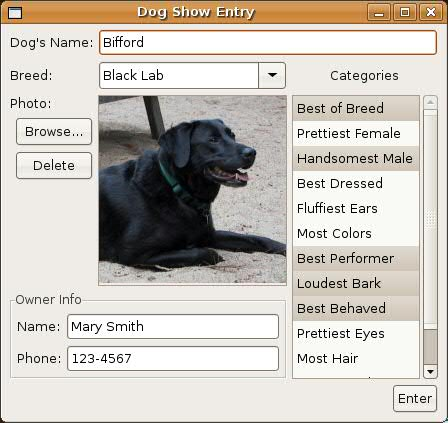If this window is resized larger, the layout adjusts as follows:
Notice the following:
- There are 3 columns and 7 rows.
- The
dogPhotoCanvasgrew wider and taller because it is filling and grabbing horizontally and vertically (we did not resize theImage, but we could have). - The
dogBreedCombogrew wider because it is filling horizontally, and it is in the same column as theCanvas. - The
dogNameTextgrew wider because it is filling horizontally, and one of the columns it spans is the column containing theCanvas. - The
categoriesListgrew taller because it is filling vertically, and it spans the same rows that theCanvasdoes. - Because the
categoriesListgrew taller, its vertical scrollbar disappeared (it did not grow wider). - The
ownerInfoGroupgrew wider because it is filling horizontally, and one of the columns it spans is the column containing theCanvas. - The
ownerInfoGroup, as a subclass ofComposite, has its ownGridLayoutwith 2 columns and 2 rows. - The
ownerNameandownerPhoneTextsgrew wider because theGroupgrew wider, and they are filling and grabbing horizontally in theGroup'sGridLayout. - The
browseanddeleteButtonsare indented slightly, and because they both fill horizontally, they are the same width. - The
deleteButtonis vertically aligned at the top of its row. - The "Categories"
Labelis centered over thecategoriesList. - The
enterButtonis horizontally aligned to the right of the 3 columns it spans. - The
dogPhotoCanvaswas created with width and height hints because we want theImageto be 80 pixels x 80 pixels, if possible. - The
categoriesListwas created with a height hint that was based on theList's font times 12, because we want try to get theListto show 12 items initially.
FormLayout
FormLayout works by
creating FormAttachments for each side of
the widget, and storing them in the layout data. An attachment 'attaches' a
specific side of the widget either to a position in the parent Composite or to another widget within the layout. This
provides tremendous flexibility when laying out, as it allows you to specify the
placement of individual widgets within the layout.
FormLayout Configuration Fields
The marginWidth, and MarginHeight
fields in FormLayout are similar to those in GridLayout. Left and
right margins are defined by marginWidth, and top and bottom margins are
defined by marginHeight. Margins can also be defined on a
per-widget basis in the attachments. FormLayout
margins are 0 by default.
To set the margins, we create a FormLayout,
and set the margin fields. The following code will set a margin of 5 pixels
around all four sides of the parent Composite:
Display display = new Display (); Shell shell = new Shell (display); FormLayout layout= new FormLayout (); layout.marginHeight = 5; layout.marginWidth = 5; shell.setLayout(layout);
FormData Object Fields
FormData objects specify how each widget in a FormLayout
will be laid out. Each FormData object defines the attachments for all
four sides of the widget. These attachments tell where to position each side of
the widget. To set a widget's FormData object, you use the setLayoutData
method, for example:
Button button1 = new Button(shell, SWT.PUSH);
button1.setText("B1");
button1.setLayoutData(new FormData());
However,
this code creates a FormData object with no attachments. In this case,
default attachments are defined, which defeats the whole purpose and utility of FormLayout.
The default attachments attach the widget to the top and left edges of the
parent Composite. If every widget in a FormLayout used the default
attachments, they would all be laid out one on top of another in the top left
corner of the parent Composite.
The left,
right, top, and bottom fields of FormData
specify the FormAttachment objects
that are associated with the left, right, top and bottom sides of the widget,
respectively. These fields are set in the following example:
FormData formData = new FormData(); formData.top = new FormAttachment(0,60); formData.bottom = new FormAttachment(100,-5); formData.left = new FormAttachment(20,0); formData.right = new FormAttachment(100,-3); button1.setLayoutData(formData);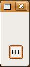
A FormAttachment object defines the
attachment of a specific side of a widget. There are many ways that a side can
be attached: to a position in the parent Composite, to an edge of the Composite,
to the adjacent side of another widget, to the opposite side of another widget,
or centered on another widget. Attaching to a position places the side of the
widget so that it is always at a percentage of the Composite. To attach
to an edge of the Composite, the percentage is either 0% or 100%.
Attaching to the adjacent side of another widget ensures that the specified side
of the widget is always next to the closest side of the other widget. Attaching
to the opposite side of another widget ensures that the specific side of the
widget is aligned with the furthest side of the other widget. Finally, attaching
to the center of another widget centers the widget on the other widget. Any of
these ways can be done with or without an offset.
If no
attachments are defined for a FormData object, the default behaviour
will attach the widget to the top left edges of the parent Composite,
like this:
button1.setLayoutData(new FormData());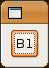
Note that if more than one widget is
defined without any attachments, the widgets will be given the same default
placement in the window and will be stacked on top of each other. FormAttachment
objects are described in further detail in the section on FormAttachment
Objects.
The width and height fields
of FormData specify the requested width and the height of the widget. If
a requested width or height conflicts with constraints set by the attachments,
then that width or height cannot be honored. Although setting attachments can
also determine width and height, there are some cases when you do not want to
define attachments for all sides of the widget. In this case, it may be useful
to set the width and height of the widget as follows:
FormData formData = new FormData(20,30); formData.top = new FormAttachment(0,60); formData.left = new FormAttachment(20,0); button1.setLayoutData(formData);
If you wish
to set only the width or the height, you can directly set the width or height
field in the FormData object:
FormData formData = new FormData(); formData.width = 30; formData.top = new FormAttachment(0,60); formData.bottom = new FormAttachment(100,-5); formData.left = new FormAttachment(20,0); button1.setLayoutData(formData);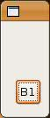
Note that
if a button is attached to the parent Composite on both sides, when the Composite
is resized, the button will grow or shrink along with it.
FormAttachment Objects
A FormAttachment
is an object that defines the attachment for a specific side of a widget. It is
not always necessary to set an attachment for all four sides of a widget. Often,
specifying one or more sides of a widget can fully specify its placement in the
layout. In order to properly place your widgets, you should define an attachment
for at least one of left or right in the FormData, and at
least one of top or bottom. If you only wish to attach the
left side of a widget and not the right, then the widget will be positioned
based on its left side, and the widget will take its natural size (or its
requested size, if one was set for it). If you do not attach the left or the
right, default positioning will attach your widget to the left side of the form.
The same logic applies for the top and bottom sides.
Attaching to a Position
There are many types of attachment. The
first is to attach the widget to a position in the parent Composite. This
can be done by defining a percentage value out of 100, for example:
FormData formData = new FormData(); formData.top = new FormAttachment(50,0); button1.setLayoutData(formData);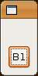
This sets the top of the Button to
a position that represents 50% of the height of the parent Composite (a Shell),
with an offset of 0. When the shell is resized, the top side of the Button
will still be at 50%, like so:
If we chose to set an offset value, the
top side of the Button would have been set to 50% of the Composite
plus or minus the number of pixels set for the offset.
We can also define the position of the button without using percentages, for example:
FormData formData = new FormData(); formData.top = new FormAttachment(30,70,10); button1.setLayoutData(formData);
If
the height of the Composite is defined as being 70 units, this sets the
top of the Button to a position representing 30 units down from the top
of the Composite, plus 10 pixels.
Attaching to the Parent
The second type of attachment is to
attach a side to the edge of the parent Composite. This is done in much
the same way as attaching to a position, but the position is either 0% or 100%.
The 0 position is defined as the top of the Composite when going
vertically, and the left when going horizontally. The right and bottom edges of
the Composite are defined as the 100 position. Therefore, if we want to
attach a widget to the right edge of the Composite, we simply have to
create an attachment that sets the position to 100:
FormData formData = new FormData(); formData.right = new FormAttachment(100,-5); button1.setLayoutData(formData);

This
attaches the right side of the Button to the right edge of the parent (a Shell),
with an offset of 5 pixels. Note that the offsets go in one direction only. If
you want a widget offset down or to the right, the offset should be positive.
For offsets that shift the widget up or to the left, the offset should be
negative. Now when the Shell is resized, the Button will always be
5 pixels away from the right edge:
Attaching to Another Widget
The
third type of attachment is to attach the side of the widget to another control
within the parent Composite. The side can be attached to the adjacent
side of the other control (the default), to the opposite side of the other
control, or the widget can be centered on the other control, all with or without
and offset.
The most common way to attach to another control is to attach to its adjacent side. For example, the following code:
FormData formData = new FormData(); formData.top = new FormAttachment(20,0); button1.setLayoutData(formData); FormData formData2 = new FormData(); formData2.top = new FormAttachment(button1,10); button2.setLayoutData(formData2);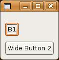
This example attaches
the top of button2 to the bottom of button1. Note
that when the window is resized, button1
will move so that its top side is always positioned at 20% of the Shell,
and button2
will move so that its top side is always 10 pixels below the adjacent (bottom)
side of button1.
While
the default is to attach the side of a widget to the adjacent side of a
control, FormAttachments can also be created to attach to the opposite
side of a control. This is useful when lining up widgets. In this case, you
create the attachment to the other control using TOP, BOTTOM,
LEFT or RIGHT
alignment, for example:
formData2.top = new FormAttachment(button1,0,SWT.TOP);
In
the following example, the top side of button1
is positioned at 20% of the Shell. button2's top side is aligned with button1's
top side, using TOP alignment. This means that the top side of button2
is also positioned at 20% of the Shell. Note that when specifying the top
attachment, only the vertical placement of the widget is being defined. It is
still necessary to set the left attachment for button2 so that the Buttons are not stacked on top of each
other.
FormData formData = new FormData(50,50); formData.top = new FormAttachment(20,0); button1.setLayoutData(formData); FormData formData2 = new FormData(); formData2.left = new FormAttachment(button1,5); formData2.top = new FormAttachment(button1,0,SWT.TOP); button2.setLayoutData(formData2);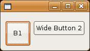
The final way to attach a widget to another control is to center it on the other control. This is useful when the widgets are different sizes. In this case, you create the attachment to the other control with CENTER alignment, for example:
formData.top = new FormAttachment(button1,0,SWT.CENTER);
This will place the top of the widget in a position that will allow the widget to be centered on the other control, with an offset of 0. Setting only the top, or the bottom, or both as a center attachment will produce the same result. The top side of the widget is not centered, but the entire widget is centered, so this only needs to be specified once. Here is an example:
FormData formData1 = new FormData (50,50); button1.setLayoutData(formData1); FormData formData2 = new FormData (); formData2.left = new FormAttachment (button1,5); formData2.top = new FormAttachment (button1,0,SWT.CENTER); button2.setLayoutData(formData2);

Using
the different types of FormAttachment allows layouts to be defined in
many different ways. FormLayout covers certain cases that cannot be
solved using FillLayout, RowLayout or GridLayout, making it a very
useful class for defining layouts.
Important: Do not define circular attachments. For example, do not attach the right edge of button1 to the left edge of button2 and then attach the left edge button2 to the right edge of button1. This will over-constrain the layout, causing undefined behavior. The algorithm will terminate, but the results are undefined. Therefore, make sure that you do not over-constrain your widgets. Only provide the attachments necessary to properly lay out the widgets.
A FormLayout Example
So far, all the examples using FormLayout
have involved one or two Buttons, to show how FormAttachments
work. Next, we will do a simple example using more Buttons to show how a
layout can be arranged using the attachments. We'll start by drawing a basic
diagram outlining the attachments that we wish to create.
FormData data1 = new FormData(); data1.left = new FormAttachment(0,5); data1.right = new FormAttachment(25,0); button1.setLayoutData(data1); FormData data2 = new FormData(); data2.left = new FormAttachment(button1,5); data2.right = new FormAttachment(100,-5); button2.setLayoutData(data2); FormData data3 = new FormData(60,60); data3.top = new FormAttachment(button1,5); data3.left = new FormAttachment(50,-30); data3.right = new FormAttachment(50,30); button3.setLayoutData(data3); FormData data4 = new FormData(); data4.top = new FormAttachment(button3,5); data4.bottom = new FormAttachment(100,-5); data4.left = new FormAttachment(25,0); button4.setLayoutData(data4); FormData data5 = new FormData(); data5.bottom = new FormAttachment(100,-5); data5.left = new FormAttachment(button4,5); button5.setLayoutData(data5);
In this case, since no top attachment was defined for button1 or button2, they are attached to the top of the layout. button3 is centred in the layout using percentages and offsets on the left and right sides. button4 and button5 are attached to the bottom of the layout with a 5 pixel offset.
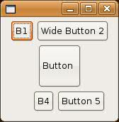When we resize, the attachments become more visible. button1 is attached on the left and the right side, so when the window is resized, it grows. Note that the right side will always be at 25% of the window. The same resize results apply for button2, as both sides are attached. The left side is attached to button1, so it will always be at 25% plus 5 pixels. button3 stays in the center of the window, horizontally. button4 is attached at the top and the bottom, so it grows vertically when the window is resized, but it is only attached on the left and not the right, so it does not grow horizontally. button5 will not grow or shrink, but it will always stay 5 pixels away from button4 on the left, and 5 pixels away from the bottom of the window.
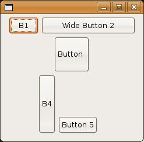A Complex FormLayout Example
To
illustrate how FormLayout can be used for more complicated arrangements,
the Dog Show Entry example done previously for GridLayout is redone
using FormLayout. This code produces an identical layout, but uses
different concepts to achieve it.
import org.eclipse.swt.SWT;
import org.eclipse.swt.events.PaintEvent;
import org.eclipse.swt.events.PaintListener;
import org.eclipse.swt.events.SelectionAdapter;
import org.eclipse.swt.events.SelectionEvent;
import org.eclipse.swt.graphics.Image;
import org.eclipse.swt.layout.FormAttachment;
import org.eclipse.swt.layout.FormData;
import org.eclipse.swt.layout.FormLayout;
import org.eclipse.swt.widgets.Button;
import org.eclipse.swt.widgets.Canvas;
import org.eclipse.swt.widgets.Combo;
import org.eclipse.swt.widgets.Display;
import org.eclipse.swt.widgets.FileDialog;
import org.eclipse.swt.widgets.Group;
import org.eclipse.swt.widgets.Label;
import org.eclipse.swt.widgets.List;
import org.eclipse.swt.widgets.Shell;
import org.eclipse.swt.widgets.Text;
public class DogShowRegistrationWindowWithFormLayout {
Image dogImage;
Text dogNameText;
Combo dogBreedCombo;
Canvas dogPhoto;
List categories;
Text nameText;
Text phoneText;
public static void main(String[] args) {
Display display = new Display();
Shell shell = new DogShowRegistrationWindow().createShell(display);
shell.open();
while (!shell.isDisposed()) {
if (!display.readAndDispatch())
display.sleep();
}
}
public Shell createShell(final Display display) {
final Shell shell = new Shell(display);
FormLayout layout = new FormLayout();
layout.marginWidth = 5;
layout.marginHeight = 5;
shell.setLayout(layout);
shell.setText("Dog Show Entry");
Group ownerInfo = new Group(shell, SWT.NONE);
ownerInfo.setText("Owner Info");
FormLayout ownerLayout = new FormLayout();
ownerLayout.marginWidth = 5;
ownerLayout.marginHeight = 5;
ownerInfo.setLayout(ownerLayout);
Label dogName = new Label(shell, SWT.NONE);
dogName.setText("Dog's Name:");
dogNameText = new Text(shell, SWT.SINGLE | SWT.BORDER);
Label dogBreed = new Label(shell, SWT.NONE);
dogBreed.setText("Breed:");
dogBreedCombo = new Combo(shell, SWT.NONE);
dogBreedCombo.setItems(new String[] { "Collie", "Pitbull", "Poodle",
"Scottie", "Black Lab" });
Label photo = new Label(shell, SWT.NONE);
photo.setText("Photo:");
dogPhoto = new Canvas(shell, SWT.BORDER);
Button browse = new Button(shell, SWT.PUSH);
browse.setText("Browse...");
Button delete = new Button(shell, SWT.PUSH);
delete.setText("Delete");
Label cats = new Label(shell, SWT.NONE);
cats.setText("Categories");
categories = new List(shell, SWT.MULTI | SWT.BORDER | SWT.V_SCROLL
| SWT.H_SCROLL);
categories.setItems(new String[] { "Best of Breed", "Prettiest Female",
"Handsomest Male", "Best Dressed", "Fluffiest Ears",
"Most Colors", "Best Performer", "Loudest Bark",
"Best Behaved", "Prettiest Eyes", "Most Hair", "Longest Tail",
"Cutest Trick" });
Button enter = new Button(shell, SWT.PUSH);
enter.setText("Enter");
FormData data = new FormData();
data.top = new FormAttachment(dogNameText, 0, SWT.CENTER);
dogName.setLayoutData(data);
data = new FormData();
data.left = new FormAttachment(dogName, 5);
data.right = new FormAttachment(100, 0);
dogNameText.setLayoutData(data);
data = new FormData();
data.top = new FormAttachment(dogBreedCombo, 0, SWT.CENTER);
dogBreed.setLayoutData(data);
data = new FormData();
data.top = new FormAttachment(dogNameText, 5);
data.left = new FormAttachment(dogNameText, 0, SWT.LEFT);
data.right = new FormAttachment(categories, -5);
dogBreedCombo.setLayoutData(data);
data = new FormData(80, 80);
data.top = new FormAttachment(dogBreedCombo, 5);
data.left = new FormAttachment(dogNameText, 0, SWT.LEFT);
data.right = new FormAttachment(categories, -5);
data.bottom = new FormAttachment(ownerInfo, -5);
dogPhoto.setLayoutData(data);
dogPhoto.addPaintListener(new PaintListener() {
public void paintControl(final PaintEvent event) {
if (dogImage != null) {
event.gc.drawImage(dogImage, 0, 0);
}
}
});
data = new FormData();
data.top = new FormAttachment(dogPhoto, 0, SWT.TOP);
photo.setLayoutData(data);
data = new FormData();
data.top = new FormAttachment(photo, 5);
data.right = new FormAttachment(dogPhoto, -5);
browse.setLayoutData(data);
browse.addSelectionListener(new SelectionAdapter() {
public void widgetSelected(SelectionEvent event) {
String fileName = new FileDialog(shell).open();
if (fileName != null) {
dogImage = new Image(display, fileName);
}
}
});
data = new FormData();
data.left = new FormAttachment(browse, 0, SWT.LEFT);
data.top = new FormAttachment(browse, 5);
data.right = new FormAttachment(dogPhoto, -5);
delete.setLayoutData(data);
delete.addSelectionListener(new SelectionAdapter() {
public void widgetSelected(SelectionEvent event) {
if (dogImage != null) {
dogImage.dispose();
dogImage = null;
dogPhoto.redraw();
}
}
});
data = new FormData(90, 140);
data.top = new FormAttachment(dogPhoto, 0, SWT.TOP);
data.right = new FormAttachment(100, 0);
data.bottom = new FormAttachment(enter, -5);
categories.setLayoutData(data);
data = new FormData();
data.bottom = new FormAttachment(categories, -5);
data.left = new FormAttachment(categories, 0, SWT.CENTER);
cats.setLayoutData(data);
data = new FormData();
data.right = new FormAttachment(100, 0);
data.bottom = new FormAttachment(100, 0);
enter.setLayoutData(data);
enter.addSelectionListener(new SelectionAdapter() {
public void widgetSelected(SelectionEvent event) {
System.out.println("\nDog Name: " + dogNameText.getText());
System.out.println("Dog Breed: " + dogBreedCombo.getText());
System.out.println("Owner Name: " + nameText.getText());
System.out.println("Owner Phone: " + phoneText.getText());
System.out.println("Categories:");
String cats[] = categories.getSelection();
for (int i = 0; i < cats.length; i++) {
System.out.println("\t" + cats[i]);
}
}
});
data = new FormData();
data.bottom = new FormAttachment(enter, -5);
data.left = new FormAttachment(0, 0);
data.right = new FormAttachment(categories, -5);
ownerInfo.setLayoutData(data);
Label name = new Label(ownerInfo, SWT.NULL);
name.setText("Name:");
Label phone = new Label(ownerInfo, SWT.PUSH);
phone.setText("Phone:");
nameText = new Text(ownerInfo, SWT.SINGLE | SWT.BORDER);
phoneText = new Text(ownerInfo, SWT.SINGLE | SWT.BORDER);
data = new FormData();
data.top = new FormAttachment(nameText, 0, SWT.CENTER);
name.setLayoutData(data);
data = new FormData();
data.top = new FormAttachment(phoneText, 0, SWT.CENTER);
phone.setLayoutData(data);
data = new FormData();
data.left = new FormAttachment(phone, 5);
data.right = new FormAttachment(100, 0);
nameText.setLayoutData(data);
data = new FormData();
data.left = new FormAttachment(nameText, 0, SWT.LEFT);
data.right = new FormAttachment(100, 0);
data.top = new FormAttachment(55, 0);
phoneText.setLayoutData(data);
shell.pack();
return shell;
}
}
This is what the layout looks like after Mary Smith enters Bifford in the dog show:
When the window is resized, the same
controls are resized as in the GridLayout example.
Writing Your Own Layout Class
Occasionally, you may want to write your own Layout class. Perhaps your layout
needs are very complex. Maybe you
have the same look in many places, and you want to take advantage of code
reuse. Or you want to leverage domain knowledge to create a very efficient
layout class. Whatever the reason, there are things to consider before writing
a new class:
-
Can
the layout be done using a
GridLayoutorFormLayout, with maybe a few nested layouts? - Can the desired effect be more easily achieved with a resize listener?
- Are you defining a general layout algorithm or just positioning widgets?
Unless you are writing a very generic Layout type that will be used by several Composite widgets,
it is often better and easier to simply calculate sizes and position children
in a resize listener. Many of the SWT custom widgets were written this way.
Although a new widget can be implemented as a Composite/Layout pair,
implementing it as a Composite that
does its layout in a resize listener and computes its preferred size in computeSize is clearer, and does not
involve writing an extra class.
First, we will look at how layouts work, and then we will create a new Layout class. Another example of writing
your own Layout can be found in the Compound Widget Example section of Creating Your Own Widgets Using SWT,
which shows how to achieve the same look using either a resize listener or a
new Layout class.
How Layouts Work
Layout is the abstract superclass of all
layouts. It only has two methods: computeSize
and layout. The class is defined as
follows:
public abstract class Layout {
protected abstract Point computeSize(Composite composite, int widthHint, int heightHint, boolean flushCache);
protected abstract void layout(Composite composite, boolean flushCache);
}
The computeSize method calculates the width and height of a
rectangle that encloses all of the Composite's children once they have
been sized and placed according to the layout algorithm encoded in the Layout
class. The hint parameters allow the width and/or height to be constrained. For
example, a layout may choose to grow in one dimension if constrained in
another. A hint of SWT.DEFAULT means to use the preferred size.
The layout method positions and sizes the Composite's children.
A Layout can choose to cache layout-related information, such as the
preferred extent of each of the children. The flushCache parameter tells
the Layout to flush cached data.
Since a Layout controls the
size and placement of widgets in a Composite,
there are several methods in Composite
that are used with Layouts.
The first two methods allow setting and getting a Layout object
in a Composite.
public void setLayout(Layout layout); public Layout getLayout();
An application can force a Layout to recalculate the sizes of and
reposition children by sending layout() to the parent Composite.
public void layout(boolean changed);
public void layout();
// calls layout(true);
You would do this after changing anything about the children that might affect
their size or position, such as changing the font of a child, changing the text
or image of a child, adding a new child, or adding children to a child. (If the
child can accommodate the change, then layout may not be necessary – for
example, changing the font or text of a scrollable multi-line Text).
Since these changes are done programmatically, they do not cause events to
happen. Consequently, the parent doesn't know about the changes, and has to be
told through the layout method. This strategy reduces flash because the
application can make several changes and then tell the parent to layout, and
the children are only redrawn once instead of once per change. If layout()
is not called and changes are made after the shell is opened, then the children
may not be correctly laid out until the shell is somehow resized. Note that shell.open()
causes a layout to occur.
The computeSize methods of a Composite calculate the
Composite's preferred size, which is the size of its client area as determined
by the Layout, plus its trim.
public Point computeSize(int widthHint, int heightHint, boolean changed);
public Point computeSize(int widthHint, int heightHint);
// calls computeSize(widthHint, heightHint, true);
The clientArea of a Composite is the rectangle that will
contain all of the children. A Layout positions the children inside the
client area.
public Rectangle getClientArea ();
The trim of a Composite is the area outside the client
area. For some composites, the size of the trim is zero. The trim can be
computed by passing the dimensions of the client area into the method computeTrim.
public Rectangle computeTrim (int x, int y, int width, int height);
Sending pack to a Composite resizes it to its preferred
size.
public void pack(boolean changed);
// calls setSize(computeSize(SWT.DEFAULT, SWT.DEFAULT, changed));
public void pack();
// calls pack(true);
The boolean parameter to the layout,
computeSize, and pack methods is the changed flag. If true, it indicates that the Composite's contents have
changed in some way that affects its preferred size, therefore any caches that
the Layout may have been keeping need
to be flushed. When a Composite is
resized, it asks its Layout to lay
out its children by calling layout(false);
therefore widget content caches are not
flushed. This lets the Layout perform
any expensive calculations only when necessary.
Caching can increase performance, but it can also be tricky. You can choose not to cache at all – in fact, it is best not to try caching until your code is stable. When considering what to cache, be certain not to store any widget state, such as the text of a label, or the number of items in a list.
Custom Layout Example
If you have several vertically oriented Composite
widgets in your application, you might choose to write ColumnLayout.
We will show a simple version of a Layout
class that lays out Composite children
into a single column. The class has fixed margins and spacing. Children are
given the same width, but they take their natural height. (Note that
RowLayout will have ColumnLayout behaviour if its type
is set to SWT.VERTICAL. This example is, therefore, just an example. In
practice, if you need to lay widgets out in a column, you would use RowLayout.)
The code for the ColumnLayout
class is below. Note that we cache the width of the widest child, and the sum
of the child heights (plus spacing), and these values are used to compute the
size and lie out the children. They are recalculated if flushCache is true.
import org.eclipse.swt.*;
import org.eclipse.swt.graphics.*;
import org.eclipse.swt.widgets.*;
import org.eclipse.swt.layout.*;
public class ColumnLayout extends Layout {
// fixed margin and spacing
public static final int MARGIN = 4;
public static final int SPACING = 2;
// cache
Point[] sizes;
int maxWidth, totalHeight;
protected Point computeSize(Composite composite, int wHint, int hHint,
boolean flushCache) {
Control children[] = composite.getChildren();
if (flushCache || sizes == null || sizes.length != children.length) {
initialize(children);
}
int width = wHint, height = hHint;
if (wHint == SWT.DEFAULT)
width = maxWidth;
if (hHint == SWT.DEFAULT)
height = totalHeight;
return new Point(width + 2 * MARGIN, height + 2 * MARGIN);
}
protected void layout(Composite composite, boolean flushCache) {
Control children[] = composite.getChildren();
if (flushCache || sizes == null || sizes.length != children.length) {
initialize(children);
}
Rectangle rect = composite.getClientArea();
int x = MARGIN, y = MARGIN;
int width = Math.max(rect.width - 2 * MARGIN, maxWidth);
for (int i = 0; i < children.length; i++) {
int height = sizes[i].y;
children[i].setBounds(x, y, width, height);
y += height + SPACING;
}
}
void initialize(Control children[]) {
maxWidth = 0;
totalHeight = 0;
sizes = new Point[children.length];
for (int i = 0; i < children.length; i++) {
sizes[i] = children[i].computeSize(SWT.DEFAULT, SWT.DEFAULT, true);
maxWidth = Math.max(maxWidth, sizes[i].x);
totalHeight += sizes[i].y;
}
totalHeight += (children.length - 1) * SPACING;
}
}
Here is some simple test code to test the ColumnLayout. The grow
and shrink Buttons show a call to the Shell's
layout() method to force a re-layout
after changing the width of one of the children. Calling layout() is the same
as calling layout(true) which tells the ColumnLayout
to flush its caches before setting the bounds of the children. The Shell
is also told to pack() after laying out the children. This
forces the Shell to take the new
size.
import org.eclipse.swt.*;
import org.eclipse.swt.widgets.*;
import org.eclipse.swt.layout.*;
import org.eclipse.swt.events.*;
public class ColumnLayoutTest {
static Shell shell;
static Button button3;
public static void main(String[] args) {
Display display = new Display();
shell = new Shell(display);
shell.setLayout(new ColumnLayout());
new Button(shell, SWT.PUSH).setText("B1");
new Button(shell, SWT.PUSH).setText("Very Wide Button 2");
(button3 = new Button(shell, SWT.PUSH)).setText("Button 3");
Button grow = new Button(shell, SWT.PUSH);
grow.setText("Grow Button 3");
grow.addSelectionListener(new SelectionAdapter() {
public void widgetSelected(SelectionEvent e) {
button3.setText("Extreemely Wide Button 3");
shell.layout();
shell.pack();
}
});
Button shrink = new Button(shell, SWT.PUSH);
shrink.setText("Shrink Button 3");
shrink.addSelectionListener(new SelectionAdapter() {
public void widgetSelected(SelectionEvent e) {
button3.setText("Button 3");
shell.layout();
shell.pack();
}
});
shell.pack();
shell.open();
while (!shell.isDisposed()) {
if (!display.readAndDispatch())
display.sleep();
}
}
}
If we run the test code, the window on the left appears. Pressing the Grow Button 3 button results in the window on the right. Resizing the window with the mouse will also make the buttons wider (or narrower) but they do not grow taller.
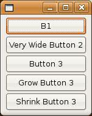 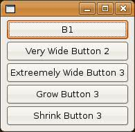Overriding Composite
If you are writing your own widget, as outlined in Creating Your Own Widgets Using SWT, and you subclass Composite, then here are a few points to consider for your implementation:
- If you
are providing trimmings in your new
Composite, make sure to override bothcomputeTrim()andgetClientArea(). - Never override
layout(), but you may overridelayout(boolean).
Sometimes you want your new Composite
to have a specific look, and you don't want the application to be able to
specify a layout. Your new Composite would either do its layout in a
resize handler or using a private custom layout. In either case, you will
probably want to do the following:
- Override
setLayout()to do nothing. - Override
layout(boolean)to call your layout code. - Override
computeSize()to correctly compute the size of yourComposite.
Summary
SWT
provides several different ways to lay out widgets. The simplest method, and
the one you will typically use, is to use one of the standard Layout classes: FillLayout,
RowLayout, GridLayout or FormLayout.
In certain
cases you may want to write your own Layout
class to provide a very specific look or to reuse very similar layout code, but
often a resize listener on the parent widget will suffice.
For
further assistance in understanding the standard SWT Layout classes, see
the SWT Example in org.eclipse.swt.examples.layoutexample.